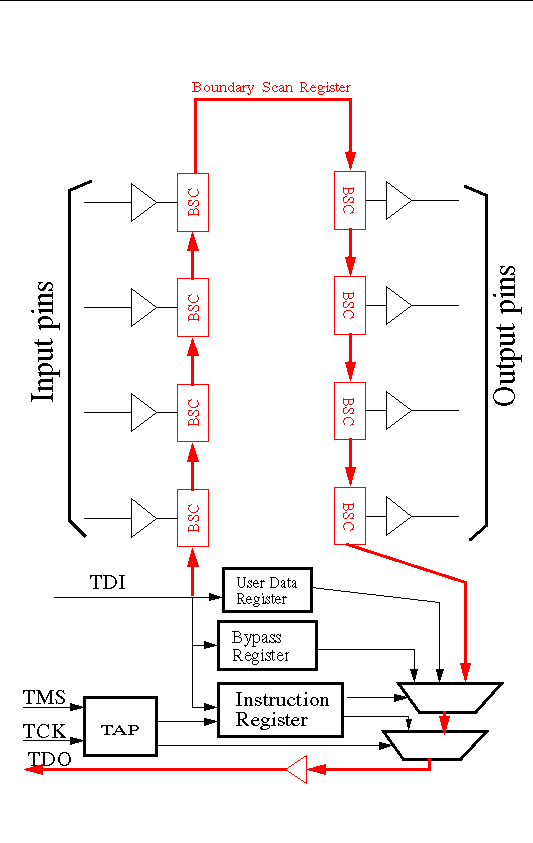
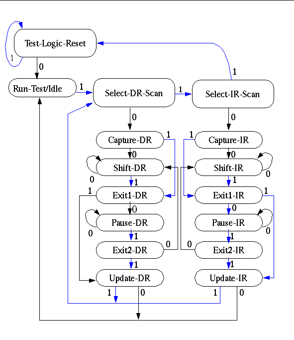

Based on e-mail from Mark Smith
<msmith@it.kth.se> (during the course) and <msmith@>
edited into HTML by G. Q. Maguire Jr. <maguire@it.kth.se>
Mark Smith has designed an IEEE Std 1149.1 (JTAG) Test Access Port (TAP) master board so we can initially program the flash and also to help debug the Badge3 boards. The information here should be enough for an individual to start writing code to support the TAP master board. Whoever starts writing code should send Mark e-mail for any extra information needed.
The TAP master board is an ISA card that plugs into a PC backplane and connects to Badge3 via a cable going to its 10 pin JTAG connector. The ISA card is I/O mapped only, and is centered around the Texas Instruments 74LVT8980 TAP master controller. TI referes to their xxLVT8980 as an embedded test-bus controllers (eTBC). "LVT" seems to stand for Low VolTage - in that it can handle both 3.3 and 5 V devices.
An excellent primer on IEEE Std 1149.1 JTAG is available at TI.A boundary scan architecture is roughly shown below:

The Test Access Port (TAP) is controlled by the Test Clock (TCK) and Test Mode Select (TMS) inputs. The TMS determines if we are going to scan the data path or if we are going to scan the instruction register. TMS and TDI are sampled on the rising edge of TCK, while TDO is sampled on the falling edge.
There are six steady states to the TAP state machine: Test-Logic-Reset, Run-Test/Idle, Shift-DR, Pause-DR, Shift-IR, and Pause-IR. The device under test is placed into Test-Logic-Reset when TMS is asserted and 5 or more TCK cycles are performed. The state machine is shown below:

As one can see from the state machine, after the Capture-DR or Capture-IR state (which causes a parallel load of all the elements of the buckets of the shift register) you can do a series of Shift-DR or Shift-IR sequences to shift the caputred date out to TDO. Similarily you can via a series of shifts bring in a set of bits from TDI and then do a Update-DR or Update-IR (which causes a parallel load of all the outputs). Of course it is not quite this simple - as there is more than one data register and you have to use operations on the instruction register to selection on of the following data registers:
Upon Reset the Instruction register is set to the IDCODE instruction if it is available otherwise the it is set to the Bypass instruction.
There are none test instructions (of which 6 are optional).
The configuration of a chip can be define in a Boundary-Scan Description Language (BSDL). BSDL is a subset of VHDL (VHSIC Hardware Description Language) that describes how IEEE 1149.1 is implemented in a device and how it operates and which input/outputs are where (via the Boundary Register Description which contains a list of boundary-scan cells).
See Texas Instruments JTAG web page and the web in general for more information about IEEE STD 1149.1 JTAG. Which includes a JTAG Testability Primer. There is also a interactive tutorial Scan Educator for MS-DOS.
The board works as a FLASH programmer on the badge by using the JTAG scan chain in the badge's StrongARM processor. The basic idea is that the JTAG scan chain allows one to serially clock bits into the StrongARM, in effect 1 bit per pin. After you have clocked in a bit for all the pins on the StrongARM that can output, the JTAG circuits cause all the pins to assert their mapped bits at once. By doing this over and over, you can very slowly cause write cycles to happen to the FLASH. We only have to do this once for a new badge to get appropriate boot code into the FLASH. After that, the StrongARM can reprogram the FLASH itself.
The JTAG scan chain is also very useful to help debug the badge, by allowing other things to be read or written to like the SRAM. On the badge, the only device that supports a JTAG scan chain is the StrongARM processor.
For programmers to write successful code for the TAP master, they need to know at least 4 things:
Here is the information for these 4 items.
The mapping for the ISA card in the PC's I/O space are shown below. Note that addresses are in HEX.
BASE address = 0x300 default
BASE+0x00 : 74LVT8980 internal register at address 0
BASE+0x01 : 74LVT8980 internal register at address 1
BASE+0x02 : 74LVT8980 internal register at address 2
BASE+0x03 : 74LVT8980 internal register at address 3
BASE+0x04 : 74LVT8980 internal register at address 4
BASE+0x05 : 74LVT8980 internal register at address 5
BASE+0x06 : 74LVT8980 internal register at address 6
BASE+0x07 : 74LVT8980 internal register at address 7
BASE+0x08 : Gate controlling the CS pin on the badge FLASH memory and
controlling the RST pin on the 74LVT8980.
How to write code for BASE+0x00 through BASE+0x07 should become clear after reading the 74LVT8980 data sheet. For BASE+0x08, data bit D0 maps to the CS pin on the flash memory, and data bit D1 mapps to the RST pin on the 74LVT8980. Treat these pins as active high, i.e., writing to BASE+0x08 with D0 set to 1 will assert CS on the FLASH. Writing with D1 set, the RST pin on the 74LVT8980 will be asserted.
You may wonder why the address BASE+0x08 allows you to directly control the CS pin on the FLASH. Can't one just control the CS pin on the FLASH by writing the correct bit pattern to the JTAG register in the processor? Yes you can, but by having a separate control to the CS pin by writing to BASE+0x08, programming the flash is much faster as you don't have to reload the entire scan chain just to toggle the CS pin on the FLASH. You just load address and data into the scan chain, and toggle the CS pin using BASE+0x08.
Note also that on the TAP master card itself, BASE is default mapped to I/O address 0x300, but this can be changed on the card in case of address conflicts. Code should be written in such a way that it can be easily changed in case BASE is changed.
4 files in PDF format showing the complete badge schematic. They are: processor.pdf, memory.pdf, sensors.pdf, and power.pdf..
This file (sa1100.jtg) is taken from the hardware description language file defining the SA1100 StrongARM, so it's somewhat hard to read, but it describes the mapping of the JTAG Scan Chain register bits in the processor to the processor's pins and which pins support write only, read only and both read/write. Future versions of the StrongARM SA-1100 data sheet should have this information in it, but as of version 2.2, this information is missing.
This is the full data sheet for the 74LVT8980 TAP master controller. Take special note of the following: